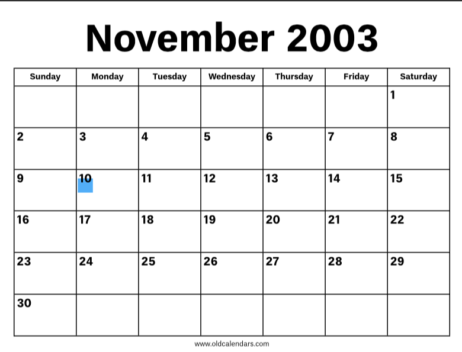

The month that rocked the world
"On the fateful day of November 10, 2003, the universe clearly decided it needed a little more flair😌—and so, in a dramatic moment that shook the cosmos (and likely involved a lot of crying till this day{just the jokes😭}), a legend-in-the-making arrived😇. A child destined not just to exist, but to thrive, conquer, and make even the smallest tasks look like grand feats after tireless breakdowns🙃. Some might say the world wasn’t ready or she wasnt ready😅, but hey, when has greatness ever waited for permission?
From that day forward, life for everyone around became a little more colorful🌈, unpredictable, and honestly way more interesting😏. This was no ordinary child , in more ways than one; this was someone who would grow up to command rooms, quiver in rooms😹, chase dreams like a pro while chasing delulu 😂, and keep everyone on their toes with a wit sharper than most people’s kitchen knives. So here’s to celebrating another trip around the sun for someone who was clearly born to stand out and show their emotions, let’s be honest, maybe make a little trouble along the way😉. Cheers to you and to the glorious chaos you bring!💙🖤"
Where the star was born
"Ah, November 10, 2003—a day of great confusion for a certain town called petoria and an even greater mystery for a certain hospital called Louis Pasteur Private Hospital(rich kd already?😭🙌). On that fateful day, a girl arrived who seemed destined to wander through life with equal parts bewilderment and flair and excess emotions. From the very start😉😌, she had that special talent of questioning everything😏—including, probably,herself and why she was even here🙃—and yet somehow always managing to do *the absolute most* in the process-ish.
" She’s the kind of person who’ll walk into a room wondering if she belongs😗, only to end up taking charge after a cry and breakdowns😭, rearranging the furniture, and accidentally becoming everyone’s favorite{social butterfly🌸🌈😗}. Self-doubt? She’s got it in spades😄, and yet it somehow fuels her to keep outshining everyone around her🤨, even if she’ll never quite admit it. Born to keep everyone—including herself—on their toes😗, this girl is a masterclass in unintentional greatness. Here’s to the one who doubts herself *just enough* to keep things interesting but still manages to steal the show every time. Cheers!💋🔥💙🖤
Jeremiah 1:5 (NKJV) “Before I formed you in the womb I knew you; Before you were born I sanctified you; I ordained you a prophet to the nations.”